Start here
Build the correct mental model and complete your first search from discovery to reuse.
What CommonsLens is · first search · four main workflows
COMMONSLENS USER GUIDE

CommonsLens is a visual research workspace for discovering Wikimedia Commons media, checking its context and reuse information, organizing files, and exporting the metadata you need. This guide explains what you can do and what happens to your data along the way.
Guide map
This is a user guide, not a feature catalogue. Start with Section 1 if you are new, jump to Section 2 if you want to understand data movement, or choose the task you are trying to complete. For a compact linked overview of the app, see Explore all CommonsLens features.
Build the correct mental model and complete your first search from discovery to reuse.
What CommonsLens is · first search · four main workflows
See what leaves the browser, what stays local, what goes into URLs, and what clearing data removes.
Requests · local storage · cache · clipboard · downloads
Turn a phrase, file title, or broad idea into a useful Commons result set.
Media scopes · formats · sorting · result cards · sharing
Use subjects, categories, rights, quality, dates, technical fields, and location to make a precise query.
Include/exclude · AND/OR · Q-codes · filter glossary
Find Commons vocabulary when you do not yet know the right category, template, or Wikidata subject.
Categories · templates · depicted subjects · file counts
Use geographic context to find media near a point, place, radius, or drawn area.
Markers · clusters · layers · map-to-search workflows
Read the file’s context, metadata, structured data, related media, usage, and source page.
Viewer · creator · dates · coordinates · preview quality
Interpret the reported rights information and produce a starting point for attribution.
Licenses · attribution · HTML · WikiText · verification
Keep references to files you want to revisit without pretending to mirror the Commons catalogue.
Local collections · folders · search · export · recovery
Explore an uploader’s files, inspect them, and export a portfolio-sized metadata set.
Uploader · portfolio search · viewer · export
Separate downloading media files from exporting metadata and URLs for research.
Originals · derivatives · CSV · selection · file fallbacks
Build repeatable visual workflows that fetch, refine, enrich, and export collections.
Sources · filters · branches · transforms · outputs
Know what a URL shares, what survives a reload, and how to move local work between devices.
Search URLs · asset URLs · map views · JSON backups
Understand provider boundaries, local privacy, licensing risk, and respectful use of public infrastructure.
Storage · providers · sensitive terms · rate limits
Diagnose empty results, missing media, unavailable metadata, lost local state, slow workflows, and inspect Wikimedia request statuses.
Search · maps · previews · storage · exports · pipelines · request log
1 / Start here
CommonsLens is easiest to understand as a research desk around Wikimedia Commons: it helps you find public media, make sense of the available context, organize references, and move useful results into a real project.
This section gives you the mental model and the shortest complete workflow. By the end, you should be able to find one file, inspect what it says about itself, check the reported reuse information, create an attribution draft, and decide whether to bookmark, download, or continue searching.
CommonsLens is an independent, non-commercial interface for exploring Wikimedia Commons. It adds a more task-oriented layer over the public archive: visual search, guided filters, map discovery, file inspection, reuse helpers, local bookmarks, CSV exports, and repeatable pipelines.
Search by words, media type, format, category, Wikidata subject, quality, license, date, technical properties, or location.
Bring the creator, uploader, descriptions, dates, dimensions, categories, assessments, coordinates, structured data, usage, and source links into one viewer.
Keep file references in browser-local bookmarks and folders, or preserve a larger workflow as a pipeline.
Copy attribution drafts, download media, share a search URL, or export metadata and media URLs for another tool.
CommonsLens does not replace Wikimedia Commons. Commons is the archive, the original file page, the contributor history, and the authoritative place to read the complete rights information. CommonsLens is a convenience layer for finding and working with that public material.
| Question | CommonsLens | Wikimedia Commons |
|---|---|---|
| What is it best at? | Fast discovery, visual filtering, geographic exploration, organization, and repeatable research workflows. | Archival context, file history, community discussion, source information, and the complete file page. |
| Does it host or own the media? | No. It requests and displays public media and metadata from Wikimedia services. | It is the Wikimedia-hosted source for the file and its page history. |
| Where should I verify a license? | Use its rights panel and generated attribution as a starting point. | Read the original file page and its full license, templates, notices, and history. |
| Where is my personal workspace? | In this browser: bookmarks, folders, preferences, and pipelines are local. | Commons has its own account and community systems, which are separate from CommonsLens. |
You can search, inspect, map, download, export, and use the reuse helpers without creating a CommonsLens account. The trade-off is that browser-local work is tied to the current browser profile and site origin. Opening the app on another device will not bring your bookmarks or pipelines with it unless you export and move them yourself.
The homepage is the Search workspace. Its controls appear in layers so you can start simply and become more precise only when needed:
+ when more results are available.Use this tutorial once before exploring the deeper sections. The example uses Apollo 11, but any subject works.
Search → inspect → verify the source page → copy attribution or download. This is the workflow above and the best place to start.
Search or Browse → apply filters → bookmark promising files into folders → export a CSV when you need a portable manifest.
Open Map → start with a point, place, radius, or existing search → inspect clusters → send the geographic query back to Search.
Open Pipelines → add a source and filters → preview → enrich only what you need → export a CSV manifest → save or export the pipeline.
You should be able to answer four questions before you use a file:
2 / How your data moves
CommonsLens is deliberately a browser-first application. There is no CommonsLens account, analytics profile, or private application database receiving your research. Your browser contacts the providers needed for the feature you use, while selected workspace data stays in browser storage.
This section lets you predict where information goes before you click. The most important distinction is between public-service requests and local workspace state: a search must contact Wikimedia to return results, while a bookmark is just a file reference saved in this browser.
The app does not expose a privacy dashboard or a hidden “sync” state. You can infer the important boundaries from the visible action:
Use this table as the practical answer to “what happens when I do this?”
| User action | What happens |
|---|---|
| Enter a search | Your query and selected filters are compiled in the browser and sent to Wikimedia search/API services. Autocomplete also makes provider requests as you type or select a suggestion. |
| Share a search | The query, media scope, filters, sort state, and location state needed to reopen the search are placed in the URL. The recipient can see those values and the browser may retain them in history. |
| View media | Thumbnails, previews, original media when requested, and file metadata are requested from Wikimedia-hosted services. Opening a source, license, usage, or repository link moves you to that external site. |
| Use the map | Media and coordinate requests go to Wikimedia. Visible multilingual street tiles go to OpenStreetMap; English street, satellite, hybrid, and reference tiles go to Esri according to the selected layer. |
| Bookmark media | The original file reference/URL is saved in this browser’s local storage. The media bytes and a private copy of the catalogue are not saved by the bookmark. |
| Open bookmarks later | CommonsLens reads the saved file references locally, then fetches current metadata from Wikimedia again. A deleted or changed Commons file may fail to reload or display different metadata. |
| Save a pipeline | The graph, node configuration, positions, name, and notes are stored in this browser’s IndexedDB. There is no CommonsLens cloud copy and no automatic cross-device sync. |
| Run a pipeline | Source and enrichment nodes fetch data from Wikimedia services. Query results and public metadata may be cached locally to support previews, continuation, and reruns. |
| Clear pipeline cache | The pipeline control clears cached query, node, and metadata results while keeping saved graphs. It is different from deleting a pipeline or clearing all site data. |
| Export CSV | The browser builds a metadata manifest for the selected items and downloads it. Each row can include a full-size or web-optimized media URL; image, audio, video, and document bytes are not fetched just because you export CSV. |
| Copy attribution | The generated plain-text, HTML, or WikiText snippet is written to the browser clipboard only after you request Copy. It is generated from available Wikimedia metadata and still needs verification. |
| Download a file | The browser requests the selected Wikimedia media URL and saves the original or displayed derivative through normal browser download behavior. CommonsLens does not retain the downloaded file. |
| Local item | Where it lives | What it contains | How it is removed |
|---|---|---|---|
| Bookmarks and folders | Browser local storage | File URLs/references, folder names, folder IDs, and folder membership. | Remove items/folders in Bookmarks, or clear site data. |
| Preview preference | Browser local storage | Whether the viewer prefers a web-optimized or full-resolution image preview. | Change the preference in the viewer or clear site data. |
| Saved pipelines | Browser IndexedDB | Graph nodes, settings, positions, names, notes, and connections. | Delete the pipeline, import over it, or clear site data. Export JSON first if it matters. |
| Pipeline query cache | Browser IndexedDB | Public query results and metadata used to make reruns and continuation faster. | Use pipeline Clear Cache, wait for expiry, browser eviction, or clear site data. |
| Current search/session state | Browser memory and URL state | Current results, selected filters, navigation queue, and shareable query parameters. | Change the search, close/reload the page, or remove the URL state. Browser/provider caches are controlled separately. |
| Downloads and exports | Your browser’s chosen device location | Media files, metadata CSVs, or pipeline JSON that you explicitly download. | Delete them using your operating system or file manager; CommonsLens cannot delete them for you. |
As with ordinary web use, providers may receive standard request information such as IP address, user agent, requested resource, time, and referrer where supplied. CommonsLens does not add an analytics layer, advertising profile, session recorder, or behavioural tracking service on top of those provider requests.
3 / Search
Search is the main way to move from an idea to a usable Wikimedia Commons file. Start with ordinary words, then narrow the result set only when the results show you what needs correcting.
This section teaches the complete search loop: describe what you need, choose the right media scope, inspect the results, refine the query, and preserve the search recipe if you want to return to it later.
The starting screen offers the search field and example searches. Examples are shortcuts into real workflows, not a separate sample dataset.
Suggestions are direct file-title matches from Wikimedia. Selecting one opens that file search immediately; pressing Enter searches the full phrase.
After a search, the workspace exposes media scopes, format chips, filter controls, sort order, result count, Grid/Map view, and the query preview.
Each card gives you a preview, title, media type, and quick actions. Select a card to inspect it, bookmark it, add it to the persistent download queue, or download it individually.
Results arrive in pages as you scroll. The number shown is the number currently loaded, and a trailing + means another page may be available.
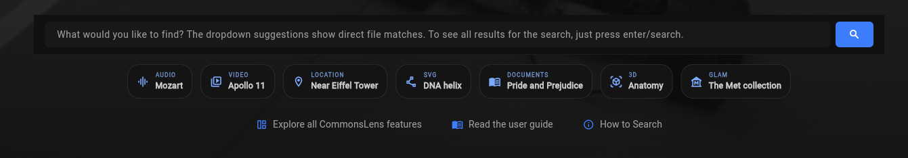
red fox, Apollo 11, or DNA helix. Start broad enough to learn the vocabulary in the results.Autocomplete is for finding a direct file-title match quickly. A suggestion is not a private copy and it does not bypass Wikimedia: selecting it still opens a CommonsLens search for that file title. If you want all matching files, ignore the suggestion and press Enter instead.
| Choose | Use it when | What changes |
|---|---|---|
| All | You are still discovering what exists. | Search across the supported media types. |
| Images | You need raster images such as JPEG, PNG, GIF, WebP, or TIFF. | Limits the media family and exposes compatible formats. |
| SVG / Diagrams | You need scalable diagrams, maps, logos, or line art. | Targets SVG files. |
| Audio or Video | You need a playable recording or moving image. | Limits results to the selected media family; format chips can narrow it further. |
| Docs | You need a document scan or publication file. | Targets PDF and DjVu files. |
| 3D | You need a model or mesh. | Targets STL files. |
The Search field and the pipeline’s Text Query source accept Wikimedia’s CirrusSearch syntax. CommonsLens forwards the query text to Wikimedia, with one CommonsLens-specific exception: spaced + creates separate result branches. The table below covers the most useful actions.
| Action | Example | What it does |
|---|---|---|
| Search ordinary words | red fox | Searches the words as one related query. Use ordinary spaces when the words describe one idea. |
| Match an exact phrase | "red fox" | Looks for the phrase as a phrase. Quotes turn off normal stemming, so this is stricter than an unquoted search. |
| Exclude a word | red fox -dog | Excludes results containing dog. Do not put a space between the minus sign and the term. |
| Exclude an exact phrase | red fox -"domestic dog" | Excludes results containing the phrase domestic dog, without excluding files that merely contain one of those words. |
| Search separate concepts | mozart + beethoven | CommonsLens behavior: searches each side independently, combines the result sets, and removes duplicate files. Put spaces around +. This is OR-style branching, not a way to require both terms in one file. |
| Use boolean keywords | cat OR dogcat AND dog | Passes the native CirrusSearch boolean expression through to Wikimedia. Its behavior can vary with special search keywords, so prefer the dedicated filters or CommonsLens + branching when they express your intent more clearly. |
| Search titles | intitle:"Eiffel Tower" | Restricts the text match to file/page titles. |
| Limit the media type | filetype:video | Limits results to a Wikimedia media family, such as video, bitmap, audio, or office. |
| Search a category | incategory:"Architecture" | Finds files directly in the named Commons category. Use the Categories filter when you need the app’s direct or nested category controls. |
| Search a template | hastemplate:"Quality image" | Finds pages/files that use the named Commons template. |
| Search structured data | haswbstatement:P180=Q146 | Matches a Wikidata statement; this example searches for files whose Structured Data says they depict Q146. |
| Search raw wikitext | insource:"{{Information"insource:/pattern/ | Searches the file description page’s source text. The quoted form is literal; the slash-delimited form is a regular expression and can be expensive. |
| Use a wildcard | cat* | Matches a word beginning with cat and continuing with zero or more characters. The wildcard cannot begin a word. |
| Use fuzzy or proximity matching | colour~"red fox"~2 | Allows approximate spelling for a word, or up to the specified word distance for a phrase. |
These operators come from MediaWiki’s CirrusSearch documentation. Commons also explains the practical search options in its search help. Remember that quotes mean an exact phrase, not a general “make this term mandatory” switch; for separate OR-style concepts in CommonsLens, use the spaced + behavior documented above.
You can begin with a media scope, format, or meaningful filter instead of a text query. For example, choose Images and PNG to discover PNG images, or combine a location and date filter for a map-oriented task. If you apply filters and the results look unexpectedly broad, check the active chips and the query preview before adding more conditions.
The query preview is a transparency aid. It shows the search recipe CommonsLens is building from your text and controls, which helps explain why a filter is present and makes a shared URL easier to discuss. It is not a promise that every visible clause becomes one literal provider request: some multi-value filters are sent as separate requests and merged so the intended result set is preserved.
The search URL is the portable record of the query setup. Search results themselves are not a permanent snapshot: Wikimedia metadata can change, new files can appear, and result ordering can change when you reopen the URL. Bookmarks, folders, and other local preferences are separate from the current search session; see Sharing and local state.
red fox does not guarantee that every returned preview visibly contains a red fox.+ marker means more results may be available.4 / Advanced filters
Advanced filters turn a broad search into a deliberate research question. They are useful when words alone are too ambiguous, when you need a particular kind of metadata, or when the result must meet a technical or reuse-related requirement.
Use this panel after an initial search has shown you what Commons calls the thing you are looking for. A good filter makes the result set more useful and explainable; a stack of filters added without checking the result set can quietly remove the files you needed.
On a wide screen, the filter panel is docked beside Search. On a smaller screen, open it from the Filters control as a drawer. The panel has a group rail and a group-specific editor:
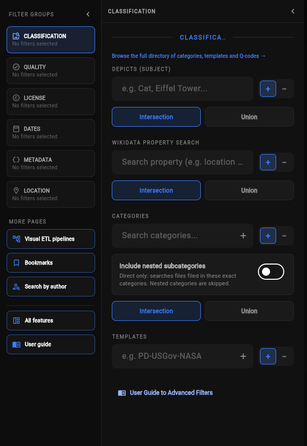
| Group | Use it for | How changes behave |
|---|---|---|
| Classification | Depicted subjects, Wikidata properties, categories, and templates. | Selected values apply immediately. Remove them from the chips shown in the group or in the main Search view. |
| Quality | Quality Media, Valued Media, Featured Media, or no quality restriction. | Selections apply immediately. The match mode changes how selected assessments are combined. |
| License | Reported license presets and attribution requirement. | Selections apply immediately. Multiple license presets match any selected license. |
| Dates | Submission date, last page edit, and original creation/photograph date. | Type ranges, then choose Apply Date Filters for the group. |
| Metadata | Language, content model, resolution, file size, and color depth. | Text fields apply on Enter or when you leave them; numeric fields apply with Apply Resolution & Size. |
| Location | Nearby searches and map-based location work. | Opens the Map workflow. Location is explained in Search by map. |
The primary sidebar separates the main filter groups from the additional navigation links with a divider. The links for All features and User guide are below that divider. A small request-log icon sits at the bottom of the primary sidebar; on the landing page, the same icon is in the top-right corner. These icons open the in-app Wikimedia request log without changing the current search.
+ mode adds a requirement; the − mode removes matching files. Existing values appear as chips and can be deleted individually.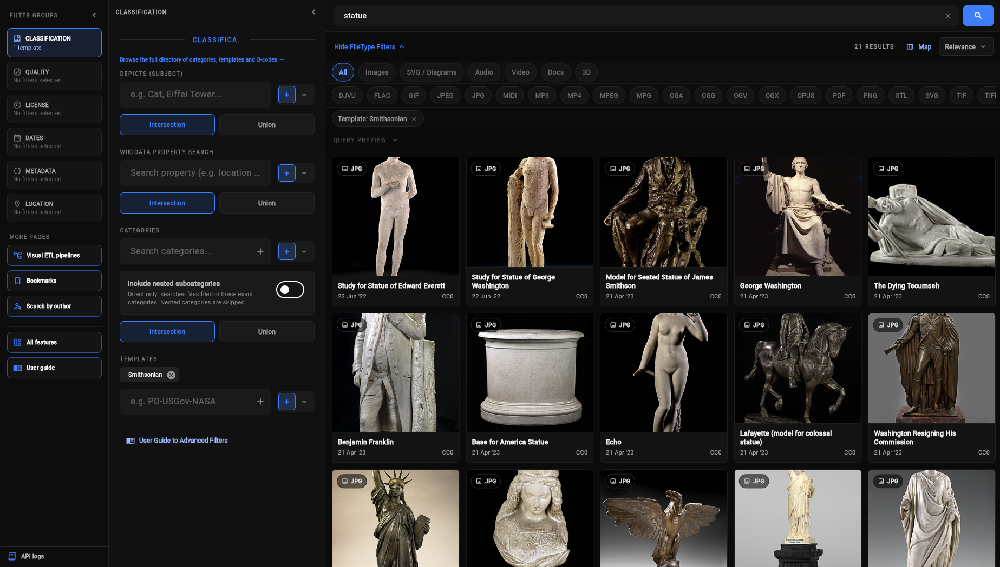
This group is the most precise way to describe what a file is about when free-text search is too ambiguous.
Category: name means direct/strict mode. Category + subcategories: name means nested/deep mode. If the latter appears unexpectedly, turn off Include nested subcategories before retrying.For Depicts, Wikidata properties, and categories, use Intersection when one file must satisfy every included value. Use Union when any one included value is enough. This choice applies only to the included values in that group; exclusions remain exclusions.
The Quality group searches for Commons assessments, not a computer vision score and not a guarantee that an image is suitable for your particular publication.
License presets are useful for discovery, especially when you are building a shortlist. Select multiple presets when any of them is acceptable. A single file may expose more than one license, so open the asset viewer and source page before deciding how to use it.
The attribution control has three states: Any attribution, Attribution required, and No attribution required. This is based on reported metadata and is a search aid. It is not legal advice and cannot account for every privacy, personality, trademark, moral-rights, or jurisdiction-specific issue.
All date fields use YYYY-MM-DD and have From and Before inputs:
| Date field | What it means | Important detail |
|---|---|---|
| Submitted to Wikimedia Commons | When the Commons file page was created. | This is an upload/submission proxy, not necessarily when the depicted work was created. |
| Last image-page edit | When the Commons page was last edited. | Editing metadata can change this without changing the media itself. |
| Originally made / photographed | The original date found in available media metadata, such as DateTimeOriginal. | Applied against returned metadata in the browser. Files without a parseable original date do not satisfy an active original-date range. |
From is the lower boundary and Before is the upper boundary. A date range can be open-ended: enter only From for “on or after” or only Before for “earlier than.”
en. Submit it or leave the field to apply it.wikitext. This describes the page’s content model, not the media’s file format.Numeric fields are intentionally applied as a group. This lets you finish typing a lower and upper bound without sending a new search after every keystroke. Clearing a field and applying the group removes that bound.
Different filter groups normally combine as AND: a result must satisfy the text query, media scope, category/subject rules, date rules, and technical requirements that are all active. Inside some groups, the control you choose changes the relationship among included values:
| Control | Meaning |
|---|---|
Include + | Keep files that match the value. |
Exclude − | Remove files that match the value. Exclusions remain subtractive even when included values use Union. |
| Intersection | Every included value in that group must match. |
| Union | Any included value in that group may match. |
| Multiple formats | Match any selected format. |
| Multiple licenses | Match any selected license preset. |
Example: “Depicts a cat or a dog, is in the Animals category, is not in the Illustrations category, and is at least 2000 pixels wide” uses Union for the two subjects, an included category, an excluded category, and a metadata lower bound. Those separate requirements still work together.
5 / Browse Commons classifications
Browse is the vocabulary-finding tool. Use it when you know the general idea but do not yet know the exact Commons category, template, or Wikidata subject that will produce a useful search.
The Browse page exposes three different public directories in one place. You can inspect the names people use on Wikimedia Commons, see a little context, and send a selected entry into Search as an inclusion filter.
| Tab | What it contains | What selecting an entry does |
|---|---|---|
| Categories | Commons category names and a displayed file/page count for each category. | Selects categories in Browse; press Apply to send the selected set to Search. |
| Templates | MediaWiki template names used on Commons file pages. | Adds the template as an included template filter and returns to Search. |
| Depicts (Q-Codes) | Wikidata items returned for a subject search, with a label, Q-code, and description when available. | Adds the selected Wikidata subject as an included Depicts filter and returns to Search. |
Categories are the filing structure used to group pages on Commons. A category may be broad, institutional, geographic, historical, technical, or curated for a particular collection.
Architecture.incategory search for files assigned directly to the selected category. Nested mode uses one server-side deepcat search; it does not expand every child category in the browser.Templates are reusable labels placed on page source by Wikimedia contributors and tools. They can identify an institution, collection, source, rights statement, maintenance state, or other page-level fact.
PD-USGov or Institution. Browse lists actual namespace-10 pages, not arbitrary values that happen to appear inside template source.Template: namespace prefix.Depicts uses Wikidata entities to describe what a file depicts. A Q-code identifies one entity even when its label could be spelled or translated in several ways.
City, Eiffel Tower, or a person’s name.| If you know… | Start with… | Why |
|---|---|---|
| Only the general idea | Search | Discover titles and vocabulary before committing to a classification. |
| A likely Commons filing term | Categories | Find the exact category spelling and inspect its displayed size. |
| An institution, collection, or page label | Templates | Find the reusable page-level label attached to matching files. |
| A specific real-world subject | Depicts (Q-Codes) | Disambiguate the entity before adding it to Search. |
| What to remove or how several values combine | Advanced filters | Use include/exclude and Intersection/Union controls. |
Institution:Metropolitan Museum of Art is usually text inside the real Institution template, not a separate template page.+-separated text searches are fetched separately and merged in the browser.Browse does not create bookmarks, folders, a saved directory history, or a CommonsLens account record. The selected value becomes part of the current Search URL and in-memory search state. Save a file explicitly if you want a durable browser-local reference.
Institution:Metropolitan Museum of Art may be template content rather than an actual template page. If a deep search warns about breadth, try a narrower parent category or direct mode.6 / Search by map
Use Map when location is part of the question, not just a detail you want to read after finding a file. Map is a visual view of the current Search session and a way to start a nearby-media search by choosing a point.
Map connects geographic context to the same search, filter, result, and viewer workflow used by Grid. It helps you discover geotagged Commons media near a place, see where the currently loaded results are located, and open a mapped file without losing its search context.
| Map element | What it means |
|---|---|
| Search circle and center dot | The active point-and-radius search. The circle is a search boundary, not a claim that every file inside it is geotagged. |
| Single marker | One loaded result with usable coordinates. Select it to open the normal asset viewer. |
| Numbered cluster | Several nearby loaded results grouped at the current zoom level. Select it to open a result sheet. |
| Results preview | On wider screens, the current result cards appear beside the map. It uses the same loaded Search session as Grid. |
| Mapped count | How many currently loaded results have coordinates that can be plotted, compared with the total loaded result count. |
| Load more | Requests another Search page. Newly loaded results can add markers or change clusters. |
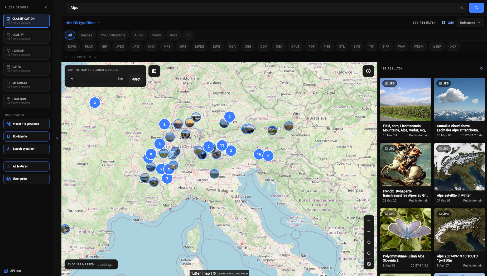
A map tap replaces the previous coordinate search and clears a competing nearby-title location if one was present. Panning, zooming, and rotating only change what you see; they do not change the search location until you tap a new point.
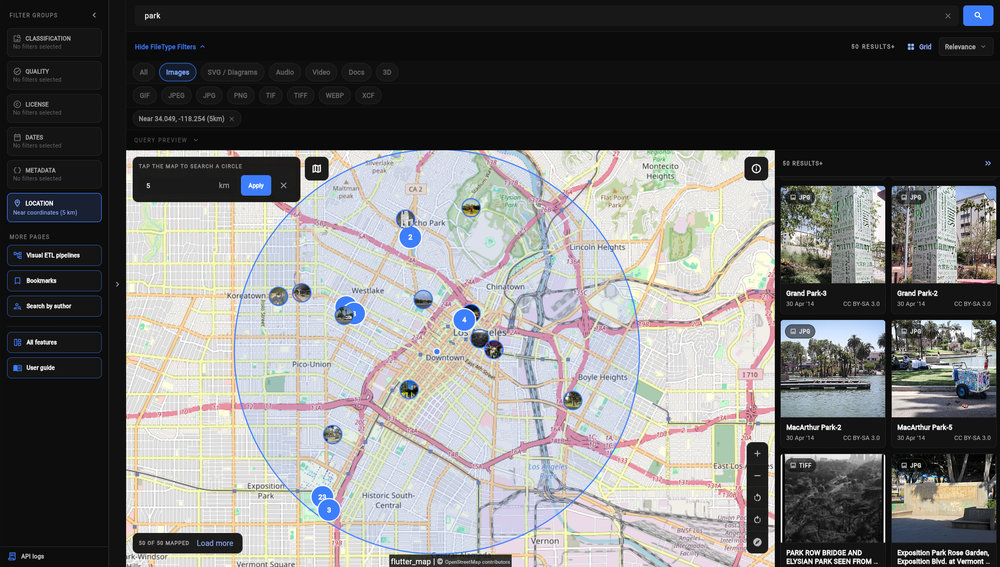
Use the layer button to cycle through four presentations:
| Layer | Provider and use |
|---|---|
| Multilingual street | OpenStreetMap street tiles with multilingual labels. |
| English street | Esri World Street Map tiles, useful when you want English-labelled streets. |
| Satellite | Esri World Imagery tiles for seeing physical features and land use. |
| Hybrid | Esri imagery with a place/boundary reference overlay. |
Map attribution remains visible at the bottom of the map. Open it when you need the provider’s attribution or terms. Use the controls on the right to zoom, rotate, or reset north.
7 / Inspect and understand a file
Treat the asset viewer as the verification step. It keeps the file connected to the search that found it while bringing the media, source, creator information, technical facts, reuse signals, and related context into one place.
Use the viewer to answer “What exactly is this file, where did it come from, what does Commons say about it, and what should I check before using it?” Search results are discovery surfaces; the viewer is where you slow down and verify.
| Area | What it is for |
|---|---|
| Media stage | Displays the image, vector, audio, video, document, or supported 3D file using the best available browser presentation. |
| Viewer header | Closes the viewer, shows the position in the current result queue, toggles the bookmark, and exposes the mobile information panel when the screen is narrow. |
| Metadata inspector | Shows the title, creator, uploader, descriptions, dates, file details, reuse information, structured data, related media, nearby search, and global usage. |
| Download & actions | Downloads the original or image/vector derivatives and opens the authoritative Commons source page. |
| Lazy sections | Structured data, related media, and global usage load when expanded, so simply opening a file does not request every optional panel. |
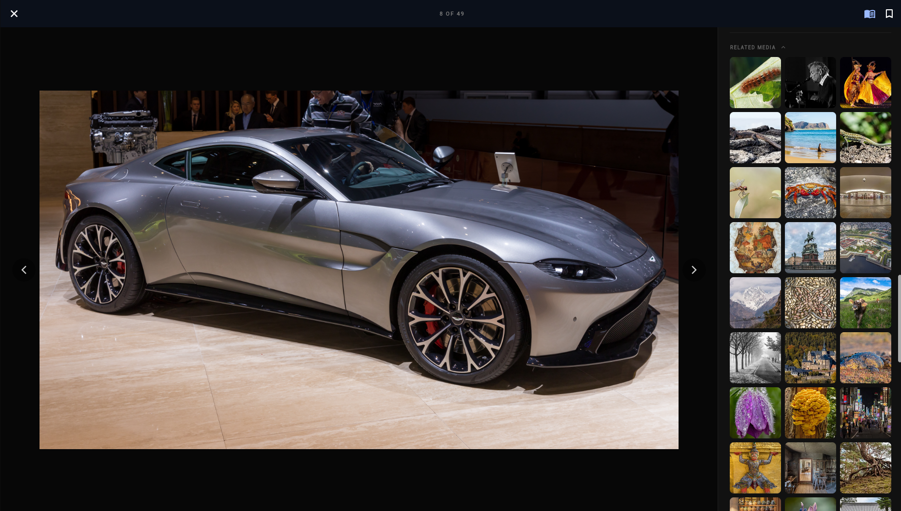
3 OF 50. A direct file link instead shows DIRECT LINK and has no surrounding result queue.| Media | Viewer behavior | What to do if it cannot render fully |
|---|---|---|
| Images and vectors | Shown in the media stage. The default preview is web-optimized; switch between WEB and FULL when the control is available. | Use Download Original or View Source Page if the preview is incomplete or too small. |
| Audio and video | Shown with the browser’s native playback controls. | Open the original media or source page if the browser cannot play the format. |
| PDF documents | Shown in the browser when the browser supports inline PDF viewing. | Use the original download or source page when inline viewing is unavailable. |
| DjVu and unsupported documents | May use a fallback presentation rather than a full inline reader. | Use Open Media / Download or View Source Page. |
| STL 3D models | Supported Wikimedia-hosted STL files can open in an interactive 3D presentation. | Use the original file or source page if the model cannot be displayed. |
The WEB/FULL choice affects the image or vector displayed in the viewer, not the file’s license or the metadata. The viewer remembers that preference locally for future viewer sessions when browser storage is available.
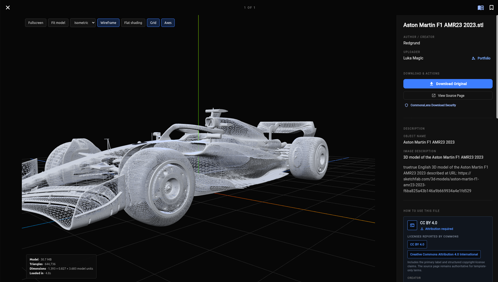
Creator metadata and the uploading account answer different questions. Use Portfolio to explore the uploader’s other uploads, but verify creator information file by file.
Created, captured, uploaded, and last-edited dates can describe different events. Do not substitute an upload date for the date the depicted work was made.
These are public Commons labels and assessments. They help discovery but can be incomplete, outdated, or maintained differently from file to file.
Coordinates are public metadata when present. They may be precise, approximate, or absent; use them as context rather than ground truth.
A viewer URL can contain the file title and the context that opened it, such as Search filters, Map state, author name, bookmark query, pipeline source, or related-file context. It does not contain the media bytes. Anyone who receives the link may be able to see the search terms, filters, coordinates, or username encoded in it.
8 / Reuse media responsibly
CommonsLens turns available Wikimedia rights metadata into a readable reuse checklist and copy-ready attribution formats. It helps you prepare a responsible starting point; it does not grant permission or replace the original license.
Use this section after finding a file you may publish, embed, edit, cite, or distribute. The goal is to make the important questions visible before you copy media or credit text:
| Panel area | What it tells you |
|---|---|
| Reported license | The best machine-readable license label CommonsLens could find from the file metadata and structured license statements. |
| Attribution status | Whether available metadata says attribution is required, is not flagged as required, or cannot be confidently determined. |
| Reuse facts | Creator, preferred credit, usage terms, copyright status, special permission, and restrictions when those fields exist. |
| Copy-ready format | Plain attribution, an HTML figure/embed, or basic WikiText generated from the file’s available metadata. |
| References | Source file, full license when a license URL exists, and Wikimedia reuse guidance. |
These are related, but they are not the same thing:
| Term | Simple meaning | What to look for |
|---|---|---|
| License | The rules for what you may do with the file. | The license name, full license link, and conditions such as attribution, share-alike, or non-commercial use. |
| Attribution | The credit you give to the creator or rightsholder. | The artist/creator, preferred credit, source link, and whether the available metadata flags credit as required. |
A license can require attribution, but “attribution not flagged as required” does not mean “no credit is needed.” Check the complete license and original Commons file page every time.
Available metadata says credit is required. Include the required creator/credit and follow the license’s notice and link conditions.
Available metadata does not flag attribution as required. Still check the license, creator, source, and any other rights before assuming no credit is needed.
The metadata does not provide a clear attribution status. Open the source page and license; do not infer permission from the warning state.
A missing license or creator field makes the generated output less reliable. The file may still have terms on its source page that were not machine-readable.
The panel can combine a primary license label with structured license statements. It may also retrieve fuller metadata when the initial search result did not contain enough information. When the sources disagree or remain incomplete, use the original file page as the controlling reference.
| Format | What CommonsLens generates | Best starting point for |
|---|---|---|
| Attribution | Readable text containing the file name, creator when available, preferred credit, license, and Wikimedia Commons source link. | Notes, captions, internal records, email, or a manual credit line. |
| HTML | A <figure> with image/media markup, source links where available, and an attribution caption. Images and vectors use a web-sized media URL. | A website or HTML document where you will review and possibly edit the markup. |
| WikiText | A basic [[File:...|thumb|caption]] file inclusion using the file name and a caption. | A Wikimedia editing workflow where you will add or verify the required credit and license notices yourself. |
The generated output is a draft. WikiText in particular is a basic file inclusion, not a complete substitute for any attribution, license, or source requirements that the file carries.
Choose a format and press its Copy button. CommonsLens writes the generated snippet to the browser clipboard and shows a confirmation. It does not need to read the rest of your clipboard to generate the text. Review the pasted result in the destination before publishing.
| CommonsLens can help you… | CommonsLens cannot guarantee… |
|---|---|
| Find reported license and attribution metadata in one place. | That the metadata is complete, current, correct, or legally sufficient for your use. |
| Prepare a credit line and links from available fields. | That the creator, uploader, rightsholder, or preferred credit has been identified perfectly. |
| Notice warnings, missing fields, restrictions, and special-permission text. | That no additional privacy, personality, trademark, moral-rights, cultural, contractual, or jurisdiction-specific issue applies. |
| Open the source and full license so you can verify them. | That a source page remains unchanged or that a third party will accept the generated output without review. |
9 / Bookmarks and folders
Bookmarks are a browser-local reference library for files you want to revisit. They are deliberately lightweight: CommonsLens saves the public file URL and reloads current metadata from Wikimedia when you open the Bookmarks page.
Use Bookmarks to keep a shortlist while researching, separate useful files into folders, revisit files without repeating a search, or add selected files to the persistent download queue. Bookmarks themselves are not a private media archive and do not download or duplicate files automatically.
| Area | What it does |
|---|---|
| All Bookmarked Media | Shows every saved file reference, whether or not it belongs to a folder. |
| Folders | Shows named subsets of bookmarks. One file can belong to multiple folders and remains in All Bookmarked Media. |
| Bookmark search | Matches the current loaded metadata and URL against title, description, object name, uploader, categories, and other searchable text. |
| Media cards | Open the viewer, remove the bookmark, add/remove the file from folders, or start a download from the card actions. |
| Download queue tray | Persists metadata-only selections across routes and lets you download verified ZIP parts or export a metadata CSV. |
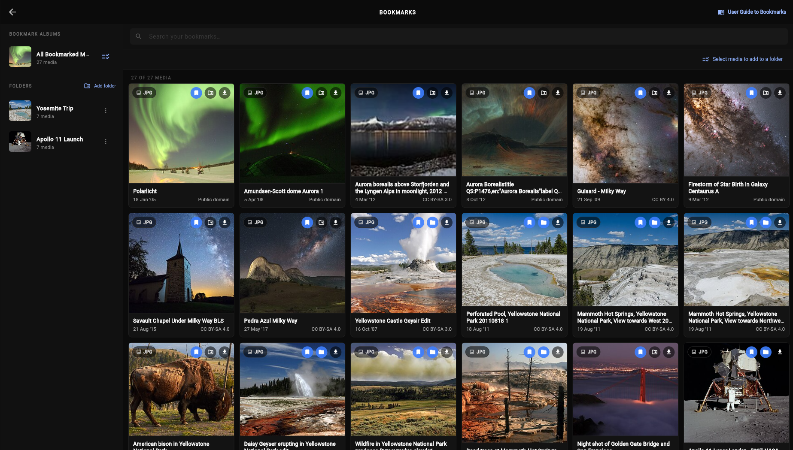
Important distinction: removing a file’s bookmark removes it from All Bookmarked Media and from every folder. Removing it from one folder only changes that folder’s membership.
Type in the Bookmarks search field to filter the currently loaded collection. Search is case-insensitive and can match the file title, public file URL, description/snippet, object name, uploader, or categories. Clear the field to restore the selected album’s full list.
The visible count can be smaller than the saved URL count because the search text, selected folder, unavailable metadata, or a failed provider request may limit what can be displayed.
| Saved | Not saved by the bookmark |
|---|---|
| Public original media URL | Media bytes or an offline copy |
| Folder names and URL membership | A complete metadata snapshot |
| Bookmark collection in this browser profile | A CommonsLens account, cloud backup, or cross-device sync |
10 / Author portfolios
An author portfolio is a focused view of files uploaded under one Wikimedia username. It is useful when you have found a contributor whose work, institution, collection, or photographic coverage is worth exploring further.
Use a portfolio to move from one known file to the uploader’s other uploads. It is a discovery and review workspace, not a biography or a complete statement of authorship. The page is keyed to a Wikimedia username and shows the media returned by the public upload index.
Open a file in the viewer and use its Portfolio action beside the uploader, or open the portfolio page with a known Wikimedia username. Copy the username carefully. Display names, account names, creator fields, and real-world identities are not always the same thing.
| Area | What it means | What you can do |
|---|---|---|
| Username search | The account whose uploads are being listed. | Enter another username and submit to switch portfolios. |
| Upload count | The number of items currently loaded into the grid. A trailing + means another page may be available. | Use it as a progress indicator, not as a guaranteed total. |
| Media grid | The current page or pages of public uploads, ordered newest first by upload time. | Scroll to request more; open individual files for full context. |
| File controls | The same card actions used in other result lists. | Open the viewer, bookmark, select, or download where the card offers those actions. |
| Download queue tray | A persistent metadata-only selection workspace across media views. | Download verified ZIP parts or export a metadata CSV with Wikimedia URLs. |
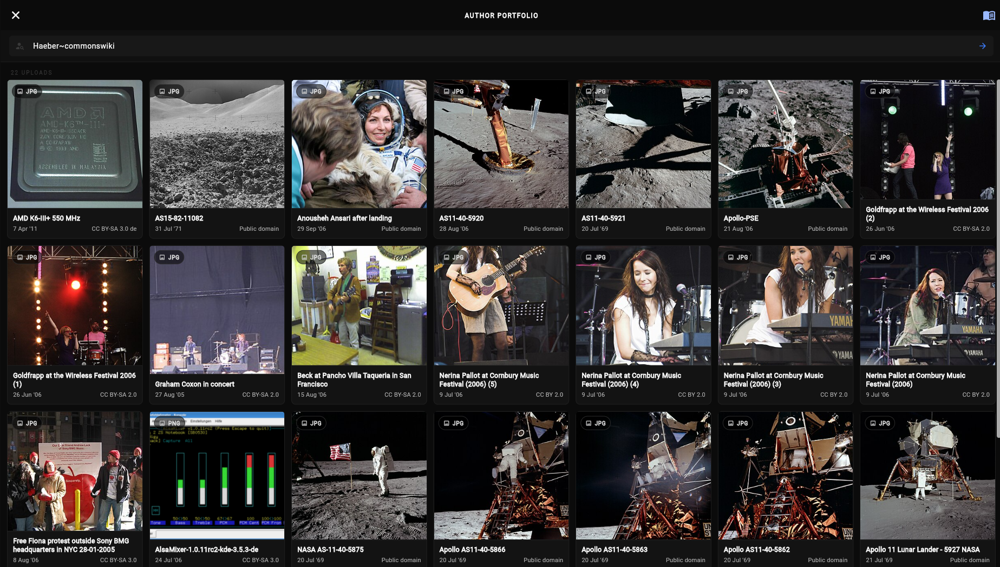
CommonsLens asks Wikimedia for the username’s upload list, then loads the metadata and preview information needed for the grid. The first page starts with the newest uploads and later pages continue through older uploads. “Newest” refers to upload time, not necessarily the date the photograph, scan, recording, or document was created.
+.The portfolio is based on the account named in Wikimedia’s public upload index. That account may represent an individual, an institution, a bot, a shared project, or a transfer account. A file can also have separate fields for uploader, creator, source, and institution. Treat the portfolio as a way to find related uploads, then use each file’s own metadata and source page for attribution and rights decisions.
The username and pagination requests are sent from your browser to Wikimedia services. CommonsLens requests the public upload list first, then requests the file metadata and preview information needed to display each page. Opening a file requests that file’s media and metadata. Exporting creates a CSV download in your browser; CommonsLens does not receive a private copy of the exported file.
The current portfolio view is interface state in the browser, while the download queue persists public file metadata until you clear it. A portfolio does not automatically create bookmarks, a folder, or a saved pipeline. Bookmark files explicitly if you want them in your local collection. If you open a file and move through the viewer queue, that viewer queue remains separate from the download queue.
Wikimedia receives the username, continuation/pagination requests, metadata requests, and media or thumbnail requests required to display the portfolio. If you export a CSV, it can contain Wikimedia URLs and metadata that you later share with another tool or person. The selected files are not uploaded to a CommonsLens account or to a private CommonsLens server.
11 / Download and export
CommonsLens separates retrieving media from exporting a research manifest. The persistent download queue lets you collect files while you browse, then either create one or more locally verified ZIP parts or export a metadata-only CSV.
The queue is a browser-local, metadata-only collection of public Wikimedia file references. It is mounted once at the application shell, so it remains available while you move between Search, Map, Bookmarks, folders, author portfolios, viewers, and other media views. It also survives a page reload when the browser retains site storage. No media bytes are fetched merely because a file was selected.
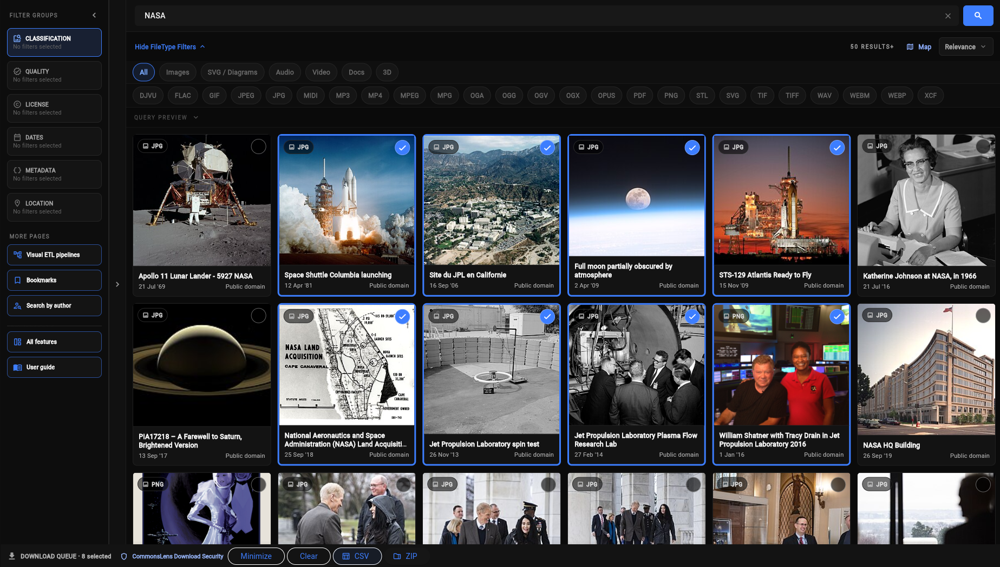
Use the viewer’s Download Original action or a card’s download control. Images and vectors may offer smaller derivatives. Individual downloads are validated before the browser is asked to save them.
Build the persistent queue across any supported media view, then choose Download ZIP. The browser receives numbered ZIP parts containing only media that passed the archive verification path.
Choose Export CSV when you want metadata and Wikimedia URLs without fetching media bytes. The CSV is a research manifest, not a media archive.
Use the pipeline’s JSON export when you want to move or back up the graph itself. This describes nodes and settings; it does not package the media returned by the pipeline.
Use the source-page action when you need the canonical Wikimedia description, complete licence text, revision context, or a file type CommonsLens does not download directly.
commonslens_media.part-001.zip. The old part is handed to the browser before the next batch is assembled.commonslens_verification_manifest.csv and README.txt. The manifest records status, ZIP entry, source page, verified URL, MIME/type observations, checks performed, expected and observed sizes, SHA-1 values, licence/attribution fields, and failure reasons for skipped files.A browser-based ZIP builder must temporarily retain verified media while it calculates checksums, writes ZIP headers, and creates the browser Blob. A count-only limit would be unsafe because 100 small images and 100 large videos have very different memory costs. CommonsLens therefore rotates a part when it reaches either 100 media entries or its byte budget. The completed batch is handed to the browser, its object URL is released, and the next batch is started after the event loop yields.
This reduces peak application memory and keeps verification cooperative so the interface can continue repainting, but it cannot force the browser or operating system to release a download immediately. Keep an eye on available disk space and the browser’s download state when exporting many large parts.
CSV export is intentionally metadata-only. The queue CSV contains detailed public metadata and original Wikimedia URLs; it does not fetch the selected media and it does not upload the queue to CommonsLens. Pipeline Dataset Manifest exports remain CSV-only and never download media bytes.
CSV fields are quoted and values beginning like spreadsheet formulas are neutralised, but a CSV is still untrusted data. Review it before opening it in a spreadsheet or passing it to another pipeline. A CSV link can lead to a file that has changed since the row was created, so re-check the source page before downloading from it elsewhere.
CommonsLens uses a fail-closed client-side policy: a file is saved or placed in a ZIP only when the checks that apply to that path agree. The queue itself is not a trust boundary; it stores public URLs and metadata until the download action takes a fresh snapshot and verifies the response.
| Check | What CommonsLens verifies | Why it matters |
|---|---|---|
| Trusted transport and origin | The media request must use HTTPS, the exact upload.wikimedia.org host, the expected Commons media path, no embedded credentials, and no unexpected port. Redirects are checked against the same boundary. | A result cannot silently turn the download into an arbitrary third-party request. |
| Fresh provider metadata | Original archive downloads re-request current Wikimedia file metadata immediately before the byte request, including the current URL, MIME, size, and SHA-1 when available. | A long-lived local queue cannot silently substitute stale URL or integrity metadata for the current file. |
| Response shape | The response must be successful, non-empty media—not HTML, JSON, a login page, or an unexpected content-encoded response. | Error pages and API responses are not accidentally saved as media. |
| Size and length | Each individual response is bounded at 256 MiB. ZIP parts are bounded at 100 media entries and a 256 MiB archive target, with a smaller media-payload budget reserved for metadata. Declared lengths must agree with received bytes when available. | Limits resource use and catches truncated, oversized, or mismatched responses. |
| Extension, signature, and MIME | The bytes are inspected for a recognised signature and compared with the trusted URL extension, Wikimedia’s Content-Type, and available file metadata. | A renamed executable, archive, HTML response, or mismatched payload is not accepted as the advertised media type. |
| Executable and archive rejection | Known executable, script, archive, Java, WebAssembly, and similar signatures are rejected before saving. The archive path may allow recognised complex media as opaque bytes, but it does not execute or unpack them. | Recognised file labels do not override the byte-level safety gate. |
| Integrity | When Wikimedia supplies a SHA-1 or expected length, the complete received bytes are checked against it. Hashing and ZIP CRC work yield cooperatively so large files do not monopolise the UI thread. | Detects corruption or content substitution when provider integrity metadata is available while keeping the interface responsive. |
| Archive admission | Only a payload returned by the verified download client can enter a ZIP. The ZIP writer stores the bytes without decompressing, transforming, or executing them; every part carries the checks and warnings for its own entries. | The archive is a packaging step after verification, not a second source of unvalidated bytes. |
| Filename safety | Path separators, control characters, hidden-file prefixes, reserved device names, executable double extensions, and unsafe archive names are neutralised. Part names are generated as safe .zip downloads. | A title cannot turn the browser download into a path or disguise the output as an executable. |
| CSV safety | Manifest fields are quoted according to CSV rules and values beginning with spreadsheet formula characters are neutralised. | Opening a metadata export in a spreadsheet is less likely to evaluate an untrusted title or field as a formula. |
The bytes are discarded and are not added to the ZIP. If another file is included in that part, the verification manifest records the skipped item and its failure reason. If nothing passes, CommonsLens does not create an empty media archive. Common reasons include an untrusted URL, unavailable current metadata, unsupported or complex direct-download format, a failed signature/MIME/length/SHA-1 check, an executable/archive signature, or a part-size limit.
Complex formats are not automatically evidence of malware. They are handled more conservatively because browser-side CommonsLens does not perform server-side malware scanning or content disarm and reconstruction. If a file is refused, use the source page and apply your own device or organisation scanning procedure rather than changing its extension or bypassing the refusal.
For an individual file or ZIP part, your browser requests media directly from Wikimedia, holds verified bytes temporarily while CommonsLens validates and packages them, and then creates a local browser download. CommonsLens does not upload selected media to a CommonsLens server, does not keep a cloud copy, and does not require an account. The browser, its caches, its download history, and the final files remain under your browser and device controls. For CSV or pipeline JSON, the browser constructs the file locally from app state.
Security screening does not verify that you may reuse a file. Wikimedia Commons licences, creator requests, personality rights, trademarks, cultural restrictions, and local law can still apply. Use the original file page as the authority for licence and attribution information; treat the downloaded filename and CSV row as convenience data, not as a replacement for source verification.
12 / Pipelines
A pipeline is CommonsLens’s visual workspace for turning one or more Wikimedia Commons queries into a repeatable collection, transformation, preview, or metadata export. This is the deepest section in the guide because the canvas is not just another search form: the order and shape of the graph determine what Wikimedia is asked for, what is combined in your browser, and what finally becomes an output.
Start with one source node, connect it to the condition or transformation you need, and finish with a preview or Dataset Manifest output. Read the graph from left to right: sources create media sets, filters narrow them, set operations combine branches, transforms shape them, and sinks finish the workflow.
The fastest first experiment is Text Query → Format Filter → Dataset Manifest. Add the source from the palette, select each node to edit its settings in the inspector, connect the nodes in order, and run a preview before exporting. The rest of this section explains what each node means and how to diagnose a graph that does not produce the expected files.
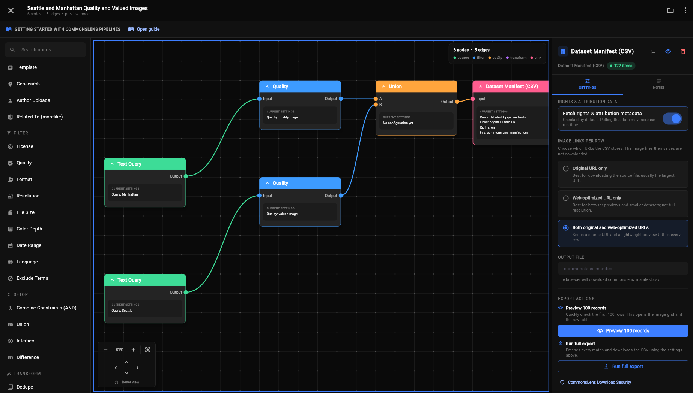
A pipeline is a directed graph. Each node receives a working collection of media records, changes it or starts a new branch, and passes the result through a visible connection. In this guide, a media set means the current list of Wikimedia files plus the metadata CommonsLens has loaded for those files.
The application defines 31 registered node types: 27 are available to add from the current palette, while four legacy sink types remain readable only so older saved graphs do not break. The complete reference below includes all 31.
A source has no input. It creates a media set from a text query, category, subject, statement, template, location, uploader, or related file.
A filter has one input and one output. It adds a condition such as licence, format, dimensions, date, language, or excluded terms.
A set node has two inputs, A and B. It combines two branches as a server-side constraint or as a URL-based union, intersection, or difference.
A transform has one input and one output. It deduplicates, sorts, samples, selects export fields, or fetches optional enrichment.
A sink is terminal. The current supported output is Dataset Manifest (CSV). Preview is exposed through that workflow, while older sink types remain readable for migration.
On a simple source → filter → filter chain, CommonsLens does not fetch every intermediate list. It compiles the source and query-capable filters into one Wikimedia search request, then materializes the branch when a preview, transform, set operation, or sink needs actual records. This usually means fewer requests and more accurate server-side filtering.
Once a branch has materialized, later work happens against the records already loaded in the browser. That distinction matters. Format, resolution, date, and excluded-term filters can still be evaluated locally from available fields. Licence, quality, language, and colour-depth conditions depend on structured query information that may not be present on each loaded record; if placed after a materialized branch such as Author Uploads or Geosearch Browse, CommonsLens warns and passes those items through rather than pretending the filter succeeded.
DateTimeOriginal, not from the indexed creation or edit dates. A pipeline preview checks one provider result page and may therefore show fewer than 100 records—or none—even when later pages contain matches. Use Run full export when the date-filtered dataset needs to continue through additional pages.There are two different kinds of work in a pipeline: requesting information about files, and downloading the files themselves.
Sources ask Wikimedia for matching file records and metadata. The response includes file information and media URLs; the pipeline does not download every original image.
Rights/attribution, technical image information, Structured Data, and global usage are additional metadata requests. They add information to rows, not media files to your computer.
The preview may load thumbnails so the grid can show images. This is display activity, not a full media download or an image archive.
The browser builds the CSV from the records and metadata it has, then downloads that small CSV file locally. The URLs inside it still point back to Wikimedia.
Only an individual download retrieves media bytes. Use the viewer’s download action when you actually want an image, audio, video, or document file on your device.
Sources create a new branch. They have zero inputs and one output.
| Node | Connections | What it does | Configure it with |
|---|---|---|---|
| Text Query | 0 → 1 | Starts a full-text Wikimedia Commons search from the query you type. It is the most general-purpose source and can be followed by query filters. | Query text, such as a name, phrase, or Commons search expression. See the text query syntax table. |
| Category | 0 → 1 | Finds files assigned to one or more Commons categories. You can require the selected categories together or treat them as alternatives, and optionally include subcategories. | Category names; Union (OR) instead of AND; Include subcategories. |
| Depicted Subject | 0 → 1 | Finds media whose Structured Data on Commons says it depicts one or more selected subjects. This uses Wikidata Q-codes rather than only matching visible words in a title. | One or more subject Q-codes; choose whether selected subjects are combined as a union. |
| Wikidata Statement | 0 → 1 | Finds media with selected Wikidata property/value statements. It is useful for structured relationships such as location, creator, depicted entity, or collection identity. | Property/value Q-code pairs; choose whether selected statements are combined as a union. |
| Template | 0 → 1 | Finds files that transclude one or more Commons templates. Templates can represent maintenance states, source collections, rights notices, campaigns, or institutional workflows. | Template names, for example a public-domain or collection template. |
| Geosearch | 0 → 1 | Starts a location-based branch. In Filtered mode, the location is compiled into a normal search and can combine with other query filters. In Browse mode, Commons’s geosearch module is queried directly and the result materializes immediately. | Mode; latitude; longitude; radius in kilometres. Browse can also use a bounding box in imported graph data. Browse has no continuation and is limited by the provider’s geosearch maximum of 500 rows. |
| Author Uploads | 0 → 1 | Loads files uploaded under one Wikimedia username, newest uploads first. This is a public upload index, not proof that the account created or owns every file. | Uploader username. The branch materializes immediately because uploader uploads use a different Wikimedia API module from normal search. |
| Related To (morelike) | 0 → 1 | Starts a related-media search from an existing Commons file. It is useful for finding visually, textually, or categorically related items without manually constructing every search term. | Commons file title, normally including the File: prefix. |
Filters normally have one input and one output. When they remain in a straight query-capable chain, they are combined into the source request instead of creating an intermediate download.
| Node | Connections | What it does | Configure it with |
|---|---|---|---|
| License | 1 → 1 | Restricts the branch to files matching the selected Commons licence presets. Treat this as a discovery filter, not a legal clearance; verify the individual file page before reuse. | One or more presets such as CC0, CC BY, CC BY-SA, GFDL, Free Art, or Public domain. |
| Quality | 1 → 1 | Filters by Commons assessment types such as Quality media, Valued media, or Featured Picture. | Quality type and match mode: Individual for the selected assessment, or And above for the app’s expanded higher-quality interpretation. |
| Format | 1 → 1 | Restricts the branch to selected file formats. It changes which media records qualify; it does not convert a file from one format to another. | One or more formats, including image, vector, document, audio, and video choices exposed by the node. |
| Resolution | 1 → 1 | Filters by pixel dimensions, independently supporting minimum and maximum width and height. | Minimum and maximum width/height in pixels. A missing dimension in metadata cannot satisfy a strict comparison. |
| File Size | 1 → 1 | Filters by the file’s byte size. It is useful for excluding tiny thumbnails or very large originals before an export. | Minimum and maximum size in bytes. |
| Color Depth | 1 → 1 | Restricts image results by reported colour depth in bits. | Required bit depth. Do not assume that a missing or unusual technical field means the file has no colour information. |
| Date Range | 1 → 1 | Filters a selected date field between a start and end date. The field matters: when available, the original date describes when the depicted media was made, while edited/upload-related dates describe Wikimedia record activity. | Field: created, edited, or original date; optional From and To dates. The original field uses available per-file metadata such as DateTimeOriginal. A pipeline preview checks one provider page for this field; use full export when later pages must be scanned. |
| Language | 1 → 1 | Restricts results to a language code where the underlying Commons search can apply that condition. | Language code such as en. This is about indexed language metadata, not a translation of the media itself. |
| Exclude Terms | 1 → 1 | Removes results whose available title or search snippet contains any of the excluded terms. It is useful for cleaning up broad text searches. | Terms entered one at a time. Matching is case-insensitive in the local predicate. |
Set operations take two branches, labelled A and B. They are where pipeline logic becomes more than a single filtered search.
| Node | Connections | What it does | When to use it |
|---|---|---|---|
| Combine Constraints (AND) | 2 → 1A + B | Merges two still-pending query branches into one SearchState before Wikimedia is queried. It expresses “match branch A’s constraints and branch B’s constraints” as one server-side search. | Use for combinations such as Text Query + Depicted Subject, or Category + License. Both branches must still be query-capable; incompatible constraints or already-materialized sources produce an error. |
| Union | 2 → 1A + B | Materializes both branches, combines them, and removes duplicate files by URL. The output contains items found in A or B. | Use when either discovery route should contribute results, such as two categories, two authors, or two unrelated searches. |
| Intersect | 2 → 1A + B | Materializes both branches and keeps only A items whose URLs also occur in B. | Use for already-materialized sources such as Author Uploads + Geosearch Browse. It is the correct replacement for Combine Constraints when a source cannot be compiled into a normal search. |
| Difference | 2 → 1A − B | Materializes both branches and keeps A items whose URLs do not occur in B. | Use to subtract a known exclusion set from a broader collection, such as “all files in A except the files found in B.” |
Transforms always materialize their input in the browser. They are powerful because they operate on the actual loaded records, but they can be more memory-intensive than a straight query filter.
| Node | Connections | What it does | Configure it with |
|---|---|---|---|
| Dedupe | 1 → 1 | Removes duplicate media records by their media URL, keeping the first occurrence in the incoming order. | No settings. Use it after Union or other branches where the same file may arrive through multiple paths. |
| Sort | 1 → 1 | Reorders the materialized set without changing which files are present. | Relevance, title, newest/oldest edited, or newest/oldest created. Client-side date ordering relies on the timestamp fields available in the loaded records. |
| Sample / Limit | 1 → 1 | Keeps only the first N records after optionally shuffling the incoming list. It is useful for a manageable sample, test run, or bounded downstream export. | Limit and whether to shuffle before taking the limit. A shuffled sample is not a promise of statistical randomness or reproducibility. |
| Field Select | 1 → 1 | Projects the records used for dataset output down to selected fields. The underlying media items remain available for preview and Search handoff, while export records carry only the chosen columns. | Fields such as title, URLs, licence, dates, uploader, dimensions, size, checksum, categories, coordinates, enrichment, and usage fields. |
| Enrich | 1 → 1 | Requests extra Wikimedia metadata for every incoming item and adds the returned fields to the export records. It can request technical image information, rights/attribution, Structured Data on Commons, and global usage. | Choose the metadata bundles you need, the request batch size, and usage pages per item. There is no built-in 20-item enrichment cap; if you want a smaller test run, put a Sample / Limit node before Enrich. Enrichment can add requests, time, and warnings. |
Sinks end a branch. The first row is the only output node currently intended for new graphs. The remaining four are registered for compatibility with older saved graphs and are not offered in the current palette.
| Node | Connections | What it does | Current user workflow |
|---|---|---|---|
| Dataset Manifest (CSV) | 1 → 0 | Materializes the incoming branch and turns it into a metadata manifest with detailed fields plus any fields requested by upstream pipeline nodes. Choose the original URL, web-optimized URL, or both. It never downloads image bytes for the CSV. | Add this node to make a pipeline runnable. Rights and attribution metadata is on by default and may increase run time. Use Preview 100 records to inspect a capped result, or Run full export to follow all available pages and download the CSV. |
| Export JSON Legacy | 1 → 0 | Older graph type retained so existing definitions can be read. It is not the current pipeline-data export path. | Not available in the palette and read-only in the inspector. Use the pipeline menu’s Export as JSON to export the graph definition itself. |
| Export Zip Legacy | 1 → 0 | Older archive-oriented graph type retained for compatibility. CommonsLens does not use it as the current media-archive workflow. | Not available in the palette and read-only in the inspector. Use Dataset Manifest (CSV) for metadata and URLs; individual media downloads remain a separate action. |
| Preview Legacy | 1 → 0 | Represents the idea of materializing a branch for browsing. Preview is now exposed as a top-level action on the current manifest workflow. | Not available in the palette. Select a materialized node or use Preview 100 records on Dataset Manifest. |
| Send to Search Legacy | 1 → 0 | Represents handing a materialized branch to the main Search workspace. The handoff is a non-paginated result set, not a new Wikimedia search with the original filter chips. | Not available in the palette and read-only in the inspector. The underlying handoff path is bounded to the media-oriented result window; use CSV for a complete export. |
The manifest always starts with detailed metadata for each image. Fields requested by upstream nodes are added automatically. You do not need to choose a column preset. A Field Select node is the one exception: if you add it, it explicitly controls the exported fields.
| Setting | What it changes | Default |
|---|---|---|
| Which image links? | Choose the original/full-size URL, the web-optimized URL, or both. These are links in the CSV; they are not downloaded media files. | Both |
| Fetch rights and attribution? | Requests the Commons metadata used to fill licence, artist/creator, credit, usage, restrictions, and attribution-status fields. The detailed columns remain present if this is turned off, but their values may be unavailable. | On |
The rights and attribution option is checked by default because every image should be reviewed for reuse terms. Pulling it may increase run time. If you turn it off, the preview and CSV show a warning: a blank licence or attribution field does not mean that reuse is unrestricted. Verify the original Commons file page.
If an upstream Enrich node requests rights/attribution metadata, the Dataset Manifest rights option stays enabled automatically. An Enrich node is not added automatically: use it only when you need its optional technical, rights, Structured Data, or global-usage bundles. If a Field Select node is upstream, Field Select controls the exported fields.
When you add Enrich, Technical image metadata starts selected. Rights & attribution, Structured Data on Commons, and Global Wikimedia usage are opt-in bundles. Enrich applies to every item that reaches it; there is no per-item enrichment cap. Put Sample / Limit before Enrich when you want a smaller test run.
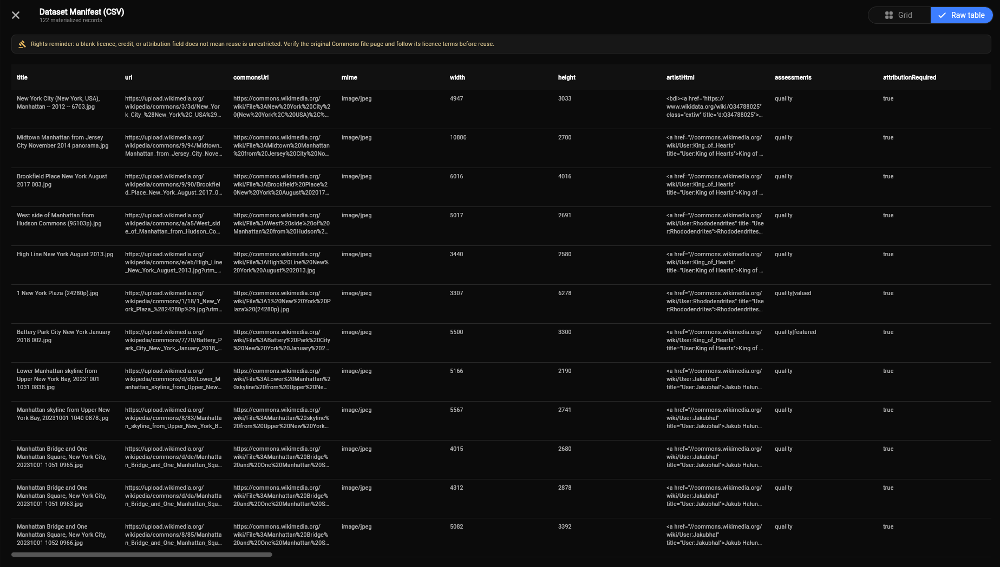
| Action | What it is for | What happens to data |
|---|---|---|
| Preview 100 records | Check whether the graph is logically correct and inspect images plus raw table data quickly. | Uses a preview request profile and caps the visible run at approximately 100 records. It may leave a resumable query cache entry for the later full run. |
| Run full export | Produce the configured CSV manifest. | Follows continuation pages until the provider is exhausted, the run is cancelled, or an error occurs. It uses the CSV node’s metadata/link settings and does not create a media archive. |
| Pause / resume | Temporarily stop before the next network page while inspecting progress. | The current request can finish; pagination waits until resumed. It does not erase the graph or already cached results. |
| Cancel | Stop a long run when the current result is no longer needed. | The run stops at a safe page boundary. A cancelled manifest is not treated as a complete export. |
| Clear cache | Remove locally cached query/enrichment results when you want fresh requests or more local space. | Clears cached results, not the saved graph itself. The graph remains until you delete it or clear the browser’s site data. |
CommonsLens is a browser client. Query-capable sources and filters are sent to Wikimedia as search/API requests. Author Uploads, Geosearch Browse, and Enrich use their respective Wikimedia endpoints. Results and optional enrichment are held in the browser while the graph runs, and query/enrichment cache entries may be stored locally in IndexedDB. The app does not send your graph to a CommonsLens application server.
A pipeline can contain sensitive research context even when it contains no account information: query terms, usernames, coordinates, file titles, category names, and node notes can all be present in the saved graph or exported JSON. Do not put secrets or private information into a pipeline. Provider requests still expose ordinary web-request information to Wikimedia and other services involved in the request.
Combine Constraints (AND) only works before both branches are fetched. For an uploader list plus a browse-mode geosearch, use Intersect.
License, Quality, Language, and Color Depth may pass through after a materialized branch with a warning. Put them directly after a query-capable source whenever possible.
Preview is deliberately capped. A successful preview proves that the graph can produce records; it does not prove that every match has been fetched.
Field Select changes export records, not the media bytes or the visual identity of the result items.
Enrichment can create many additional requests because it can run for every incoming item. Enable only the bundles you need, and put Sample / Limit before Enrich when you intentionally want a smaller test run.
Pipeline JSON preserves the recipe. Dataset Manifest CSV preserves metadata and URLs. Neither is a downloaded media archive.
13 / Sharing and local state
CommonsLens has no account or cloud workspace. Sharing happens through URLs and exported files; bookmarks, folders, saved pipelines, caches, and viewer preferences stay in the browser that created them unless you deliberately export something.
| Thing | What another person receives | What it does not include |
|---|---|---|
| Search URL | The search text, selected media tab, filters, categories, subjects, statements, dates, location, sort, and map/grid presentation state encoded as query parameters. | A frozen copy of the result list. The recipient’s browser runs a new request and may see different results, metadata, ordering, or availability. |
| Asset viewer URL | The file identifier plus the source context needed to return to a search, author portfolio, bookmarks view, pipeline result, related-media list, or direct file view. | A permanent snapshot of the surrounding queue. The recipient may need to refetch the source and may not see the same loaded pages. |
| Author portfolio URL | The Wikimedia uploader username, such as the name query parameter on the author route. | A copy of the uploader’s files. The portfolio is fetched again and changes over time. |
| Bookmarks URL | The bookmarks page, search text, and optional folder identifier used to display a local view. | Your bookmark URLs, folder contents, or folder data. Another browser profile will not have your local collection just because it opens the same URL. |
| Pipeline JSON | A portable graph definition containing node types, configuration, titles, positions, connections, and notes. | Fetched media, query-cache contents, or a completed export. Importing it recreates the recipe; it does not recreate your local cache. |
| CSV manifest | The metadata rows and Wikimedia URLs you chose to export. | Images, audio, video, document bytes, bookmark folders, or a way to restore bookmarks automatically. |
Search links can carry far more than a simple text query. Depending on the search, the address may include categories, excluded terms, Wikidata subjects or statements, licence presets, quality settings, dimensions, file sizes, dates, language, location coordinates, a nearby-title search, templates, sort order, and the map/grid view. Collection values are encoded into query parameters so the app can reconstruct them after a reload.
When you open a file, the address bar contains a /view URL with the file identifier and, where relevant, the source context. Copy that URL to point someone to the file. If the link came from Search, an author portfolio, Bookmarks, a related list, a map, or a pipeline result, CommonsLens uses that context to rebuild navigation when it is available.
The link is resilient but not a snapshot. A queue identifier may refer to a temporary session copy of loaded records. If the recipient does not have that session, CommonsLens can refetch a supported source or load the single file directly, but the exact list, pagination position, or metadata may differ.
| Storage area | What CommonsLens uses it for | What happens if it is cleared or unavailable |
|---|---|---|
| Local storage | Bookmark URLs and folder membership; the metadata-only download queue; the viewer’s Web-optimized vs. Full-resolution image preference. | Bookmarks, folders, the download queue, and the saved viewer preference disappear or return to their defaults. Private browsing or storage restrictions can prevent persistence while leaving the current session usable. Media bytes are never stored in the queue. |
| IndexedDB | Saved pipeline graphs plus pipeline query and enrichment caches. Query results are treated as fresh for about one hour; enrichment metadata is treated as fresh for about seven days. | Saved pipelines and cached pipeline data can disappear when site data is cleared. The pipeline’s Clear Cache action removes cached results while preserving saved graphs. |
| Session storage | Temporary media queues used by the viewer so a loaded list can survive navigation or a reload in the same browser tab. The store keeps a bounded number of recent queues. | Viewer navigation may fall back to refetching the source or opening only the requested file. It is not cross-device or cross-browser storage. |
| Runtime memory | Current Search state, active result pages, transient selections, loading status, and temporary UI state. | Reloading or closing the page can remove it unless the URL or a browser-local store can reconstruct it. |
| Browser/provider caches | The browser and service worker may cache application files, previews, media, map tiles, or API responses under normal browser and provider cache rules. | Cache eviction or a hard refresh may cause requests again. CommonsLens does not treat these caches as a portable backup. |
| Downloads folder | Individual media files, numbered verified ZIP parts with their per-part manifests, CSV manifests, and pipeline JSON files created through browser downloads. | The browser and operating system own these files. Clearing CommonsLens site data does not normally delete files already downloaded to your device. |
| Situation | Usually available | Usually not available |
|---|---|---|
| Reload the same page | Search state encoded in the URL; bookmarks; saved pipelines; the metadata-only download queue; viewer preference; some temporary viewer queues. | Runtime-only result state that cannot be reconstructed, such as an unshared external result list or a transient selection. A media download that was in progress is not resumed. |
| Open the same URL in another tab | The query, filter, file, author username, or map presentation encoded in the URL; browser-local stores may load in the new app instance. | Live UI state from the original tab, including an active download. Reload the tab if it was open before a queue change. |
| Use another browser or device | Copied search, asset, author, or map URLs; imported pipeline JSON; opened CSV files; downloaded ZIP parts transferred separately. | Local bookmarks, folders, saved graphs, the metadata-only download queue, caches, viewer preference, and active/session work. |
| Clear site data | External files already downloaded; anything you exported or copied elsewhere. | Browser-local bookmarks, folders, download queue, pipelines, caches, and preferences stored by CommonsLens. |
Local state is not sent to a CommonsLens account because CommonsLens does not have one. When you open a shared URL, however, your browser makes the corresponding requests to Wikimedia and any map provider involved. Those providers receive ordinary web-request information and the query or resource needed to answer it under their own policies.
Sharing a URL can therefore reveal both the URL contents and the fact that the recipient opened it. Sharing a CSV or pipeline JSON can reveal more: CSV includes metadata and links, while JSON can include your node configuration, search terms, usernames, coordinates, titles, and notes. Inspect those files before sending them.
14 / Privacy, rights, and responsible use
CommonsLens helps you discover, inspect, and organize public Wikimedia media. It does not own the media, grant a new licence, certify a proposed reuse, or replace the terms of Wikimedia, map providers, or the original source pages.
| Question | Where to check | Why it matters |
|---|---|---|
| What does the copyright licence allow? | The original Wikimedia Commons file page and its complete licence notice. | Permissions may require credit, a source link, licence notice, modification disclosure, or share-alike treatment. A download button is not permission by itself. |
| Who should receive credit? | The creator/artist/author fields and the source page—not only the uploader username. | The account that uploaded a file may be an institution, bot, shared account, or transfer account. Uploader and creator are not interchangeable. |
| Are there rights beyond copyright? | File descriptions, depicted people and places, source/institution notes, local law, and context of your intended use. | Privacy, publicity/personality rights, moral rights, trademarks, patents, contractual restrictions, cultural concerns, and sensitive subjects can matter even when the copyright licence is free. |
| Is the information current and complete? | Reopen the original page immediately before publication and record the source link and relevant licence text. | Metadata can be incomplete, corrected, changed, or disputed. CommonsLens summaries and exports are not permanent evidence of the page’s current state. |
Find licence-filtered candidates, inspect creator/uploader/source fields, open the original page, generate an attribution draft, and export metadata for your own review.
That a file is copyright-clear for your exact use, that every metadata field is complete, that a person consented, that a cultural restriction is absent, or that a generated attribution is legally sufficient.
A blank licence, creator, date, or source field is not permission. Treat uncertainty as a reason to inspect the source page or seek permission/advice.
Copy-ready attribution is a convenience assembled from available metadata. Compare it with the licence and source page, then edit it to satisfy the actual requirement.
CommonsLens does not require an account and does not maintain a private application database of your research. It does not intentionally load analytics, advertising pixels, behavioural tracking, fingerprinting, session replay, or interaction telemetry. Bookmarks, pipeline graphs, notes, query caches, and viewer preferences are stored in your browser as described in Section 13.
This is data minimisation, not invisibility. Your browser still contacts GitHub Pages for the site, Wikimedia services for search and media, and OpenStreetMap or Esri when you use those map layers. Those providers receive ordinary web-request information and apply their own terms and privacy policies.
Publicly reachable does not mean context-free or harmless to redistribute. Consider whether a file identifies a living person, reveals a sensitive location, documents a vulnerable community, depicts trauma, or could be used to harass, mislead, or expose someone. Do not use CommonsLens to target people, compile invasive dossiers, bypass access controls, or republish sensitive material without considering the consequences.
Geographic coordinates deserve particular care. A map result may reflect public metadata, but publishing an exact location can create a different risk from viewing it in context. Use a less precise location or omit it when your audience and purpose do not require precision.
CommonsLens is independent and is not operated, sponsored, endorsed, or warranted by the Wikimedia Foundation, Wikimedia Commons, Wikidata, OpenStreetMap, Esri, Google, or GitHub. Their content, licences, privacy policies, availability rules, and usage policies apply when your browser contacts them. Opening an external source, licence, repository, or global-usage link moves you into that provider’s environment.
The CommonsLens software is open source under the Apache License 2.0, subject to its conditions and third-party notices. That software licence does not change the separate copyright and other rights attached to Wikimedia media or data.
| Before you… | Confirm that you have… |
|---|---|
| Publish or redistribute a file | Opened the original page, confirmed the licence, identified the creator, prepared required credit, checked modifications/share-alike terms, and considered rights beyond copyright. |
| Share a search or pipeline | Removed confidential queries, private names, precise sensitive coordinates, and notes that the recipient does not need. |
| Run a large pipeline | Previewed the graph, enabled only the enrichment bundles needed, used Sample / Limit for any smaller test run, allowed for provider load, and planned how to store the resulting manifest. |
| Use map or location results | Considered whether showing or publishing the exact coordinates could create a privacy, safety, cultural, or conservation risk. |
| Automate research | Moved to the relevant official API and reviewed its current usage, rate, identification, and licensing requirements. |
This guide is the operational summary. Read the Terms of Use for licence responsibility, acceptable use, provider boundaries, and availability limitations, and the Privacy Policy for browser storage, provider requests, and data deletion choices.
15 / Troubleshooting
Troubleshooting is easiest when you first identify which layer failed. A problem may be in CommonsLens itself, in the Wikimedia API, on Wikimedia’s media host, in a map provider, in your browser’s local storage, or in the search or pipeline configuration. The visible symptom is not always the cause: a broken thumbnail does not necessarily mean that a file is gone, and an empty result does not necessarily mean that Commons has no matching files.
When you need to see whether a request was made and what Wikimedia returned, open the request log from the small receipt icon. On the landing page it is in the top-right corner; in the Search filter workspace it is at the bottom of the primary sidebar, including the collapsed sidebar rail.
The log groups app-managed Wikimedia requests by operation:
| Group | Examples |
|---|---|
| Autocomplete | Subject, property, category, and template suggestions. |
| Search | Normal Search and filter-result requests. |
| Pipeline | Pipeline source, pagination, and enrichment requests. |
| Browse | Category, template, and depicted-subject directory requests. |
| Metadata | File information and optional metadata requests. |
| Thumbnail / Media | Preview-sized and other Wikimedia-hosted media requests. |
| Download | Requests made for an explicit media download. |
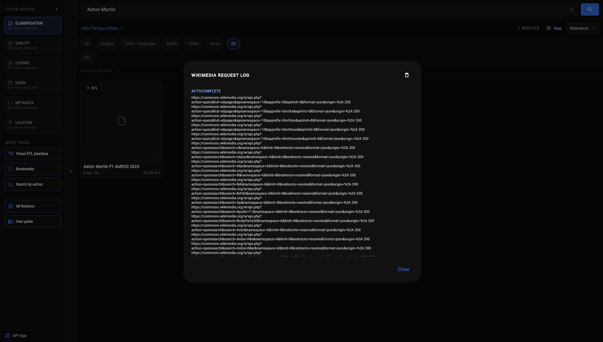
NO_RESPONSE entry means the app attempted the request but did not receive an HTTP response.| What you see | Most likely layer | What to do |
|---|---|---|
| No results | Search configuration or an intentionally narrow query | Inspect the active filter chips. Remove filters one at a time, broaden the text query, try OR instead of AND, check the selected media tab and format, and clear restrictive dates, coordinates, or title-only mode. A shared search URL runs a fresh search; it is not a frozen snapshot of the original result list. |
| Results appear, but they are different from a shared link | Live Wikimedia data or URL state | Search results can change as files and metadata change. Confirm that the entire URL was copied, including its query parameters, and that it was not truncated by a chat or email client. Re-run the same search with the same filters; do not treat a URL as a permanent archive. |
| The search stays loading | Network, Wikimedia API, rate limiting, or a slow query | Wait for the current request, then retry once. Reduce broad full-text, location, “more like,” or enrichment-heavy searches. Close duplicate tabs and check whether another site loads. A timeout does not prove that there are no results. |
| The first page loads but later pages fail | Continuation request, provider load, or transient network error | Use the result page’s retry or load-more action after a pause. Keep the first page if it is useful, but do not assume that it represents the complete collection. For a large collection, use a capped pipeline preview or divide the search into smaller ranges. |
| Autocomplete is empty or slow | Short suggestion request, network, or Wikimedia response time | Type a more distinctive phrase, wait briefly, and submit the full query instead of depending on suggestions. Autocomplete is a convenience; it does not determine what the full search can find. |
| The map is blank or its tiles are missing | Map layer provider or network | First distinguish the two cases: points with missing tiles usually indicate a map-layer/provider problem; a working map with no points usually indicates coordinates, radius, or filters. Switch between available map layers, reload, reduce the radius, or use the grid/search view while the map provider recovers. |
| A map loads, but there are no points | Coordinates, radius, or result eligibility | Check the center point and radius, make sure the query actually has geolocated files, and remove unrelated filters. A file without usable coordinates cannot appear merely because its title names a place. |
| A thumbnail is broken, but the result card exists | Media host, preview URL, browser, or a stale file URL | Open the result’s source page, try the full-size or web-optimized preview, and reload. Check extensions or network filters that block media hosts. A preview failure does not by itself mean that the source file has been deleted. |
| The viewer says it could not load the file | File availability, browser support, external media host, or format | Open the original page and confirm that the file is still present. Try a different preview size or reload without a blocking extension. Documents and unusual formats may rely on browser support or a fallback; use the source page when the browser cannot render the format. |
| The file opens, but structured data, related media, or usage information is missing | Separate optional metadata requests | Read the file’s core metadata and source link first. A failed related-data panel does not necessarily mean that the file is invalid. Retry later, check the source page, or continue without that optional panel if the file itself is available. |
| Metadata or rights information is blank | Incomplete or changing Commons metadata | Open the original file page and read the complete description, creator, source, and licence sections. Missing metadata is a reason to verify or ask for permission, not evidence that the file is free to use. |
| A download is refused | CommonsLens safety screening | Read the refusal and check the ZIP manifest if another part was created. CommonsLens accepts only trusted HTTPS Wikimedia media paths, revalidates current metadata for archive downloads, applies a 256 MiB individual-file limit, checks type/length/signature/MIME and available SHA-1 integrity, and rejects unsafe signatures. Complex formats may be allowed as opaque archive entries but are never guaranteed safe to open. |
| The download starts but the browser does not save it | Browser download permission or local device settings | Check the browser’s downloads panel, blocked-download notice, default download folder, available disk space, and permission to download multiple files. A large queue may produce numbered ZIP parts; do not repeatedly trigger another job while the first browser download is still pending. |
| The download tray is still visible after Minimize | Tray state or an active download | Minimize collapses the tray into a floating download button; it does not clear the queue or cancel work. Use the floating button to restore it. Use Cancel during an active ZIP job, or Clear when idle, to remove the queue. |
| The page becomes slow during verification | Large media, hashing, ZIP finalization, or browser memory pressure | CommonsLens yields during hashing and ZIP CRC work, rotates at 100 entries or its byte budget, and releases each completed batch before starting the next. The browser may still need time to release a large download; reduce the selection or use CSV if the device is memory-constrained. |
| The CSV is empty, too small, or missing media bytes | Export scope or misunderstanding of the format | Confirm what was selected and whether the current view has loaded all intended records. A CSV is a metadata manifest containing fields and URLs; it is not an image, audio, video, document, or media archive. Open it in a text editor or spreadsheet and inspect the header and first rows. |
| Bookmarks disappeared | Browser storage, site origin, private browsing, or cleared site data | Return to the same CommonsLens origin and browser profile. Check that you are not in private browsing and that site storage is allowed. Clearing site data, browser eviction, or storage restrictions can remove local bookmarks. If you exported a CSV, it preserves metadata and URLs but does not recreate folder membership automatically. |
| A saved pipeline disappeared | Browser-local saved graph data | Check the Saved Pipelines area in the same browser and site origin. Private browsing, browser storage eviction, or clearing site data can remove saved graphs. Export pipeline JSON after building important work; pipeline JSON preserves the graph definition, not its previous results. |
| A viewer queue is missing in another tab or device | Session-local state | Viewer queues are temporary browser-session state and are not a cross-device account feature. Recreate the queue from bookmarks, search results, or a saved manifest. A same-tab reload may recover a queue, but a new device or cleared session storage will not. |
A direct /docs/ link says Page Not Found | Static-host routing or local development server | Open Docs through the app navigation or try the static document URL with /docs/index.html. On a deployment, configure the host to serve the docs directory and its index file. A route fallback that only knows Flutter application paths may not automatically serve a nested static directory. |
The result count is the outcome of all active constraints together. CommonsLens can combine text, media type, file format, categories, depicted subjects, structured-data statements, dates, dimensions, file size, licence, quality, location, title/full-text mode, and other filters. When the result set is empty, assume that at least one constraint is doing exactly what it was asked to do before assuming that the service is broken.
CommonsLens reads metadata from Wikimedia services and media bytes from Wikimedia’s media storage. Maps add another external dependency. These services can fail independently, so use the following distinction:
The result card, title, or source link is present but the thumbnail, viewer, or map tiles are absent. Try another preview, switch map layers, disable a blocking extension, or open the source page.
The page loads normally but no files or map points match. Review query, filters, coordinates, radius, and media type. A healthy interface does not make a narrow query broader.
If Wikimedia’s original file page or media URL cannot load, wait and retry later, check your connection, and avoid repeated refreshes. CommonsLens cannot repair a deleted file or an unavailable upstream service.
A download refusal is intentionally different from a network error. CommonsLens screens direct media downloads so that a URL does not silently turn into an unexpected local file. It checks that the URL is HTTPS and on Wikimedia Commons media storage, applies an extension and size policy, compares the response with expected length and type where possible, checks file signatures and SHA-1 integrity when available, rejects executable/archive content, and creates a safe output filename.
This is a protective gate, not an antivirus or a legal review. A file can be legally reusable and still be unsafe for a particular device or workflow. Conversely, a blocked format can be perfectly legitimate but unsuitable for the direct browser-download path. When a refusal is appropriate for your work, use the source page or the documented export URL, then apply your own operating-system and organisational scanning procedures.
Pipeline problems usually come from graph structure, query cost, provider throttling, or the difference between a preview and a full run. A pipeline must have a Dataset Manifest (CSV) sink before it can run. A graph can be valid while still producing warnings because some filters cannot be applied locally after a materialized source, or because enrichment requests failed for part of the dataset.
| Pipeline message or behaviour | Meaning | Recovery |
|---|---|---|
| No input connected | A node has no usable upstream dataset. | Connect a source or connect the node to the output of the previous step. Start at the source and trace each branch toward the Dataset Manifest sink. |
| Both inputs are required | A set operation or constraint-combining node is missing branch A or B. | Connect both branches and confirm that each branch returns a compatible dataset. If you only have one branch, remove the set-operation node. |
| Cycle detected | The graph loops back into itself, so there is no valid execution order. | Delete the connection that points toward an earlier node. Build pipelines left to right conceptually: source, constraints/filters, transforms, then sink. |
| Combine Constraints does not run | Its inputs must be pending/query-capable branches. Materialized Author Uploads or Geosearch Browse branches are not interchangeable with pending query branches. | Use Intersect when you need to combine materialized datasets, or restructure the graph so both inputs are compatible constraint branches before combining them. |
| A filter warns that it may be passed through | Some filters cannot be applied accurately after a materialized branch, so the run may preserve the records and report that the filter was not enforced. | Move the filter earlier into a query-capable branch where possible. Treat the output as unfiltered for that condition and verify the CSV before using it as a precise dataset. |
| Enrichment is slow or only partly complete | Enrichment can make extra Wikimedia requests for every incoming item, and individual metadata bundles can fail independently for some records. | Use Preview first, put Sample / Limit before Enrich if you need a smaller test run, disable bundles you do not need, wait between runs, and read the warning. Partial enrichment should be treated as partial data, not as proof that no metadata exists. |
| Run is slow or appears stuck | Requests are deliberately serialized and throttled; broad sources, many pages, enrichment, and large output can take time. | Wait for the current request, use Preview first, add a limit or sample, remove unnecessary enrichment, split a large job, and pause between batches. Do not open many copies of the same expensive pipeline. |
| Original-date preview is short or empty | “Originally made / photographed” is metadata-based, and preview mode checks only one provider result page so it does not block on a multi-page lookahead. | Confirm that the returned files have parseable DateTimeOriginal metadata, then use Run full export to continue scanning pages for the complete date-filtered dataset. |
| Cancel was pressed | The current run is incomplete. | Keep the partial preview only for diagnosis. Re-run the full pipeline when ready and verify that the final manifest has the expected number of records. |
| Export says to run the pipeline first | There is no completed output available for the requested export. | Connect a Dataset Manifest sink, run or preview the pipeline, wait for it to finish, then export the resulting manifest. |
| Imported pipeline JSON is rejected | The file is not valid JSON exported by CommonsLens or was changed in a way the importer cannot understand. | Re-export from the Saved Pipelines area, verify that the file was not truncated, and import the unmodified JSON. Pipeline JSON is a graph definition, not a CSV result. |
CommonsLens is intentionally usable without an account. That means bookmarks, folders, saved pipelines, caches, viewer preferences, and temporary queues live in browser storage rather than in a cloud account. “It disappeared” is therefore usually a browser-profile or storage question, not a server-side account question.
http and https, different hostnames, different ports, and different deployments have separate storage.Shared URLs are useful instructions for repeating a search, not immutable evidence. They can contain query terms, usernames, categories, dates, and coordinates, and those values can be visible in browser history or messages. Remove sensitive information before sharing and verify current results again when the work matters.
| Observation | Likely owner | What CommonsLens can do |
|---|---|---|
| Many unrelated searches time out or return rate-limit/busy messages | Wikimedia API, network, or temporary provider load | Throttle, retry with backoff, and let you simplify the query. Wait and try again later; do not bypass provider limits. |
| Only map tiles fail while the rest of the page works | Selected map provider, tile availability, or network policy | Offer another layer and let you continue with grid/search results. The provider’s own terms and availability still apply. |
| Only one file fails on its source page | File availability, file metadata, or source-side issue | Preserve the source link and show the failure context. CommonsLens cannot restore or correct upstream content. |
| The same page fails only in one browser/profile | Browser cache, extension, permissions, storage, or local network policy | Use a private-window test only after preserving local work, disable one suspected extension, or try another profile. If the clean profile works, investigate the browser setting rather than repeatedly rerunning the task. |
If the same failure remains after the steps above, a useful report lets someone reproduce the smallest failing case. Include:
For rights, metadata, or availability questions, include the original Wikimedia source page when appropriate. For security refusals, include the refusal category and source page rather than uploading or sharing the downloaded file.